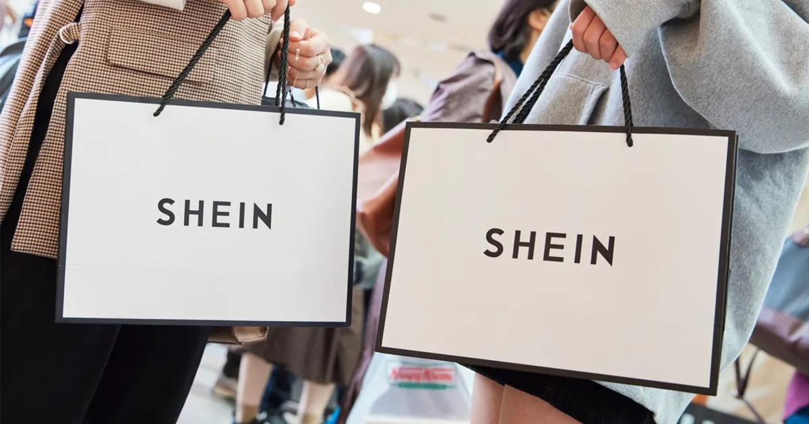

RESPONSABILIDAD
Nos esforzamos por estar siempre a la vanguardia de las tendencias, utilizando tecnología avanzada y procesos innovadores para ofrecer lo último en moda rápidamente y con la mejor calidad. SheIn está comprometido con prácticas sostenibles y responsables. Trabajamos para minimizar nuestro impacto ambiental mediante el uso de materiales sostenibles y la optimización de nuestras operaciones logísticas
